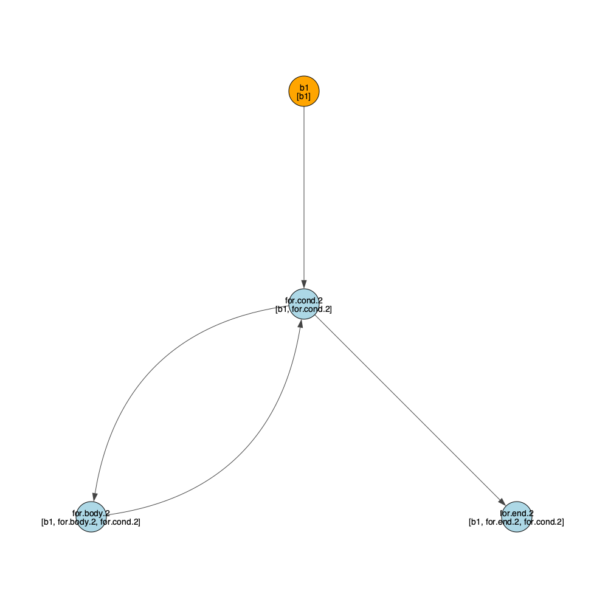
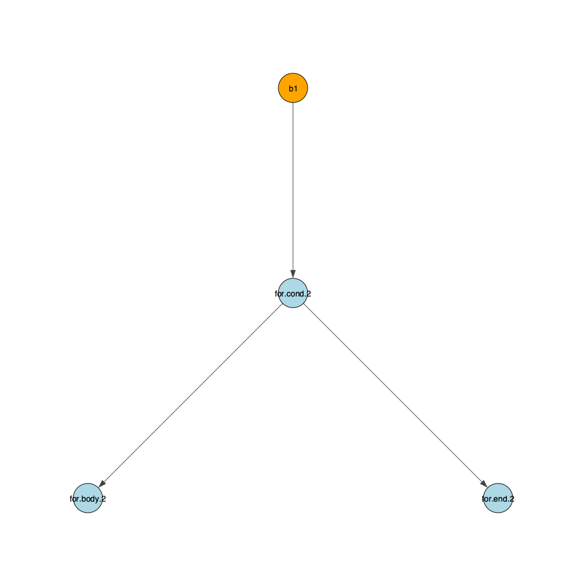
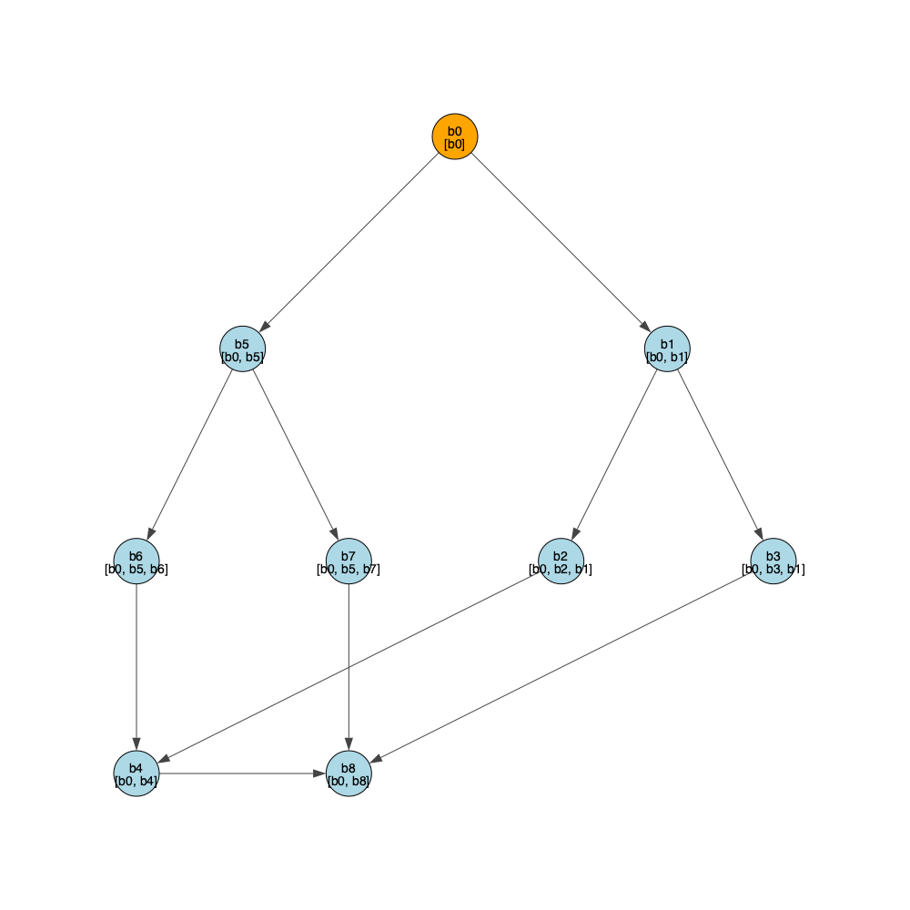
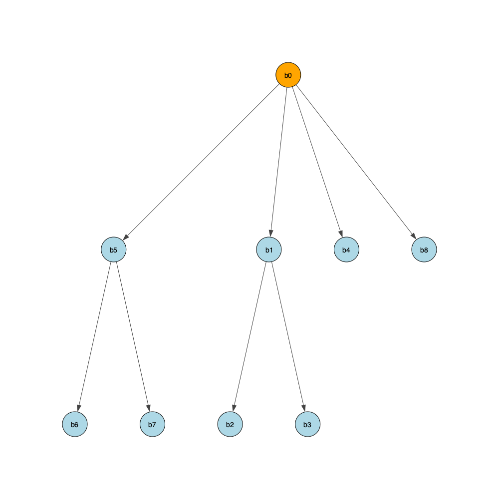
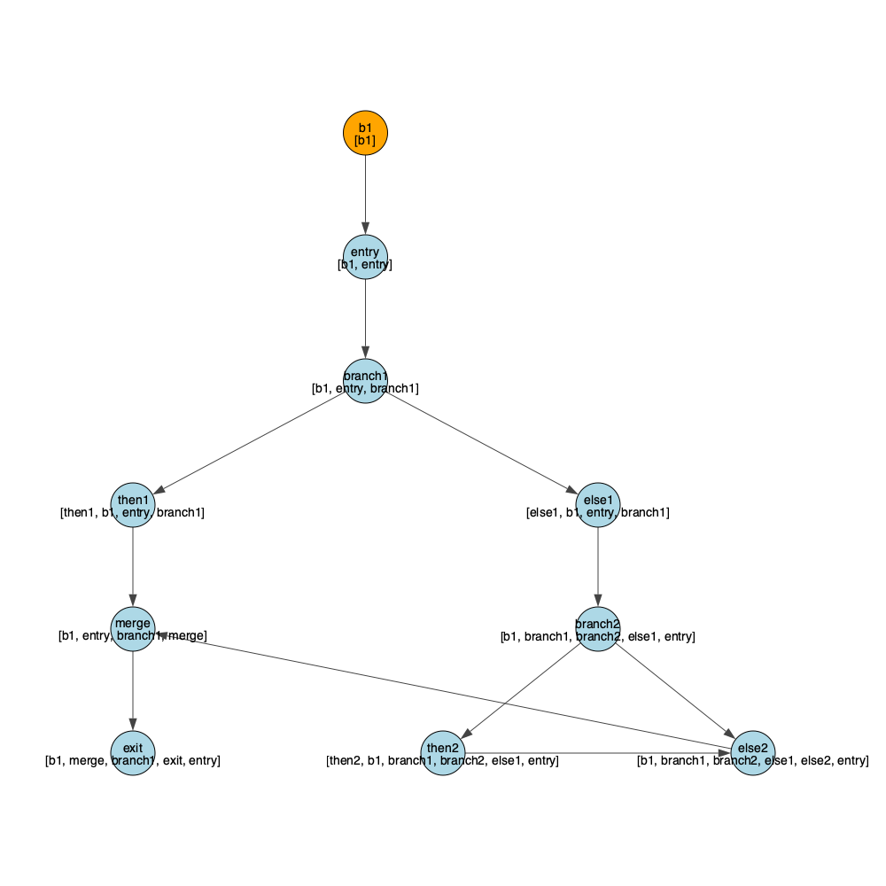
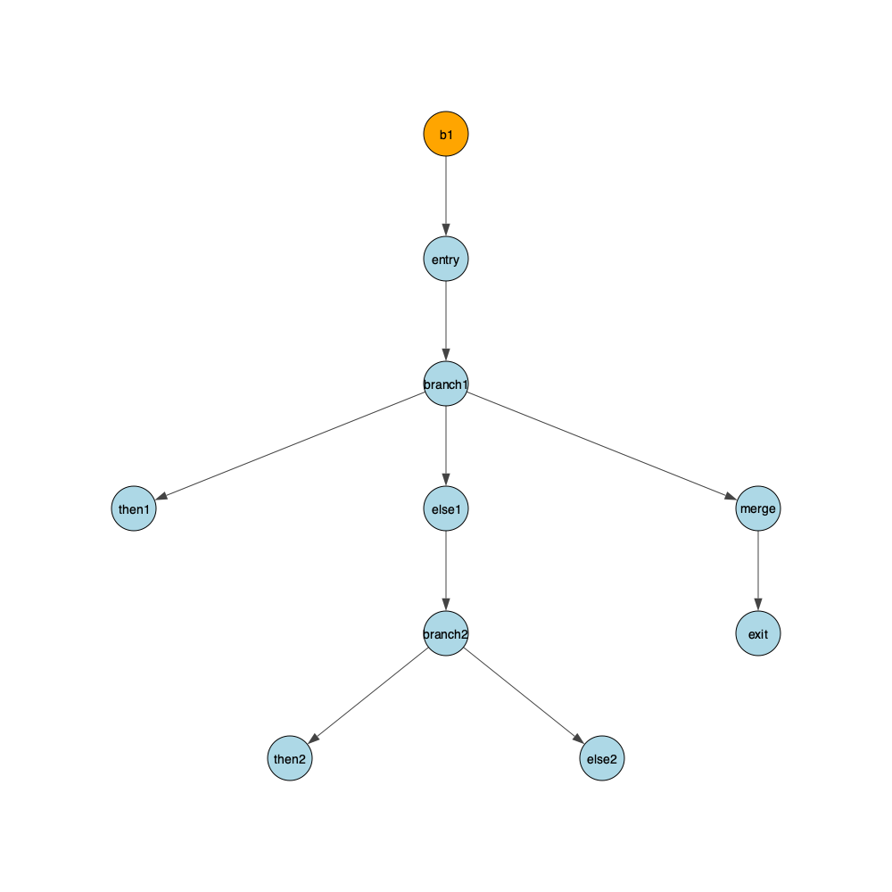

Homework 4 – Implementing Dominance Algorithms
I implemented the dominator functions inside dominator.py. There are some utility functions in the utils.py file. Functions to draw the graphs are located inside graph.py. To run the program, pass a bril file through stdin bril2json < file.bril | python3 dominatory.py --doms --doms_tree --dom_frontier --test_dom --nodes nodeA nodeB
--doms computes the dominators for each block and generates a cfg image. --dom_tree computes the dominator tree and generates the image. --dom_frontier computes the dominance frontier of all nodes and prints it out. --test_dom --nodes nodeA nodeB tests if nodeA dominates nodeB.
Key Concepts
• Dominators: A block B1 dominates another block B2 if every path from the entry block to B2 must go through B1.
• Immediate Dominators: The closest dominator of a block B is called its immediate dominator (idom).
• Dominance Frontier: The set of blocks where the dominance relationship breaks.The get_dominators() function returns a dictionary mapping a node to its dominators. We find a node’s dominators by finding the common ancestry of all it’s predecessors.
def get_dominators(blocks):
# get block list and block set structures
all_blks_l = list(blocks.keys())
all_blks_s = set(all_blks_l)
# get the firs block
entry = next(iter(blocks))
# init dominator dict
dom = {name: all_blks_s for name in blocks.keys()}
dom[entry] = {entry}
_, predecessors = generate_graph(blocks)
changed = True
while changed:
changed = False
# all vertices except the entry point
for v in all_blks_l[1:]:
intrsct = all_blks_s
# get the common ancestors of all predecessors
for pred in predecessors[v]:
intrsct = intrsct.intersection(dom[pred])
# self dominates
new_dom = intrsct.union({v})
# update the dominator tree entries
if new_dom != dom[v]:
dom[v] = new_dom
changed = True
return domWe build the dominance tree by finding the immediate dominators of each block. A node a immediately dominates a node b if a != b and no node c (with c != a and c != b) exists such that a dominates c and c dominates b.
def strictly_dominates(b1, b2, doms):
return b1 in doms[b2] and b1 != b2
def build_dominance_tree(dom):
# init dominator tree
dom_tree = {node: [] for node in dom.keys()}
for a in dom.keys():
for b, b_doms in dom.items():
if a != b:
E_a_stric_dom_c = False
# look at all dominators of b
for c in b_doms:
# c != b
if c != b:
# check if a strictly dominates any of b's dominators
E_a_stric_dom_c = E_a_stric_dom_c or strictly_dominates(a, c, dom)
# b1 strictly dominates
if a in b_doms and not E_a_stric_dom_c:
dom_tree[a].append(b)
return dom_treeFinally, the get_dominance_frontier() function returns a dictionary mapping each block to the blocks that lie within its dominance frontier. First we compute the intersection between the dominators of all predecessors of the node, then compute the union for the same set. Subtracting the intersection from the union results in the dominance frontier for a given node.
def get_dominance_frontier(blks):
# get predecessors and dominators for each block
_, p = generate_graph(blks)
doms = get_dominators(blks)
# init the frontier dict
frontier = {name: [] for name in doms.keys()}
# loop over all nodes
for node in doms:
# get the dominators of all predecessors of the current node
pred_doms = [doms[pred] for pred in p[node]]
# if none, we can skip to the next node
if len(pred_doms) == 0:
continue
# get the set intersection for dominators of all predecessors of current node
intersection = set.intersection(*map(set,pred_doms))
# get the set union for dominators of all predecessors of the current node
union = set.union(*map(set,pred_doms))
frontier_set = union - intersection
# add nodes to the frontier dict
for block in frontier_set:
frontier[block].append(node)
return frontier
Let’s look at some examples.
test1.bril
# ARGS: 8
@main(input: int) {
value: int = id input;
v1: int = const 1;
result: int = id v1;
v3: int = id value;
i: int = id v3;
.for.cond.2:
v4: int = id i;
v5: int = const 0;
v6: bool = gt v4 v5;
br v6 .for.body.2 .for.end.2;
.for.body.2:
v7: int = id result;
v8: int = id i;
v9: int = mul v7 v8;
result: int = id v9;
v10: int = id i;
v11: int = const 1;
v12: int = sub v10 v11;
i: int = id v12;
jmp .for.cond.2;
.for.end.2:
v13: int = id result;
print v13;
v14: int = const 0;
}CFG with Dominators
 #### Dominance Tree 
We can run the following command to generate these two graphs, compute the dominance frontier and check whether node b1 dominates for.cond.2.
bril2json < test1.bril | python3 dominator.py --doms --dom_tree --dom_frontier --test_dom --nodes b1 for.cond.2
Dominance Frontier
{'b1': [], 'for.cond.2': ['for.cond.2'], 'for.body.2': ['for.cond.2'], 'for.end.2': []}
b1 dominates for.cond.2test7.bril generates the same graph as one of the examples shown in the class slides.
@main{
.b0:
a: int = const 1;
b: int = const 0;
cond1: bool = a;
br cond1 .b5 .b1;
.b5:
cond2: bool = a;
br cond1 .b6 .b7;
.b1:
cond3: bool = a;
br cond1 .b2 .b3;
.b2:
jmp .b4;
.b4:
jmp .b8;
.b6:
jmp .b4;
.b3:
jmp .b8;
.b7:
jmp .b8;
.b8:
print a;
}We can verify that block b4 doesn’t dominate block b0 by running:
bril2json < test7.bril | python3 dominator.py --doms --dom_tree --test_dom --nodes b4 b0
b4 doesn't dominate b0CFG with Dominators
 #### Dominance Tree 
test4.bril incorporate phi nodes:
@main {
x: int = const 1;
y: int = const 2;
.entry:
z: int = add x y;
.branch1:
cond1: bool = le x y;
br cond1 .then1 .else1;
.then1:
t1: int = mul x z;
jmp .merge;
.else1:
t2: int = sub y z;
.branch2:
cond2: bool = gt t2 x;
br cond2 .then2 .else2;
.then2:
t3: int = add t2 x;
.else2:
t4: int = sub t2 y;
.merge:
u: int = phi t1 .then1 t3 .then2 t4 .else2;
.exit:
print u;
}CFG with Dominators
 #### Dominance Tree 